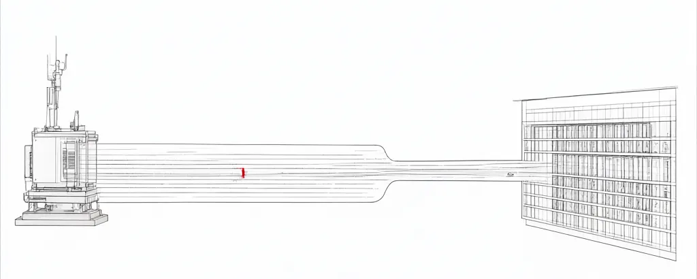

One device, every other device.
A phone, a laptop and a TV each hold part of someone’s files, and none of them reach the others. Search Box is the layer that makes all of it reachable from wherever you already are: on the local network over Wi-Fi or LAN, across networks over the internet, with permissions that decide who sees what.
The interesting part was never the transfer. It was the permission model — sharing that is specific enough that a household and an office can share one device without leaking into each other.
- Role
- Project Lead, API design
- Dates
- Dec 2014 – Mar 2015
- Team
- Three developers
- Stack
- Go, REST
- Result
- Published in the Advances in Computer Science and Information Journal
The problem
Local sharing tools assumed one device and one user. Real homes have a tablet, two phones and a TV, and real offices have shared machines with separate people. Either the permissions were global and too loose, or the reach was local-only and useless outside the building.
The goal was one address space for the content, and a permission layer thin enough not to fight it.
Three decisions that held.
ApproachDiscover, then describe
Devices announce themselves on the LAN and publish what they hold as a flat, queryable description. No central index to maintain, no sync job to fail quietly.
Stream instead of copy
A video plays from the device that owns it. Nothing is staged in the middle, so a large file behaves the same as a small one and there is no second copy drifting out of date.
Permissions per person
Sharing is granted to a user on a device, not to the device. Two people on one machine see different sets, which is what made it usable in an office at all.
Outcome

“Yogesh took the API design from a sketch to something we could build against without another round of questions.”